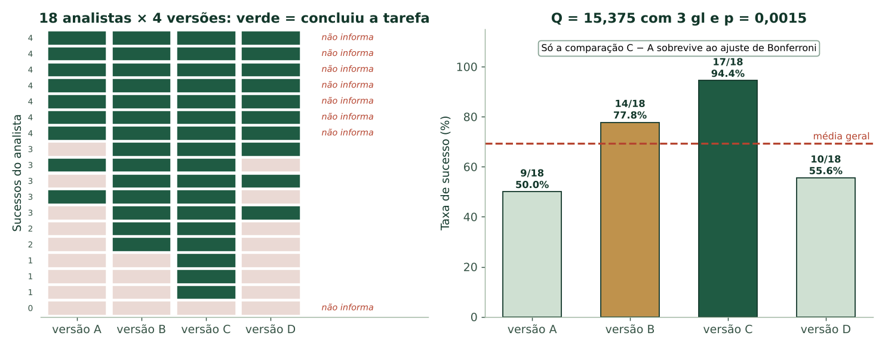
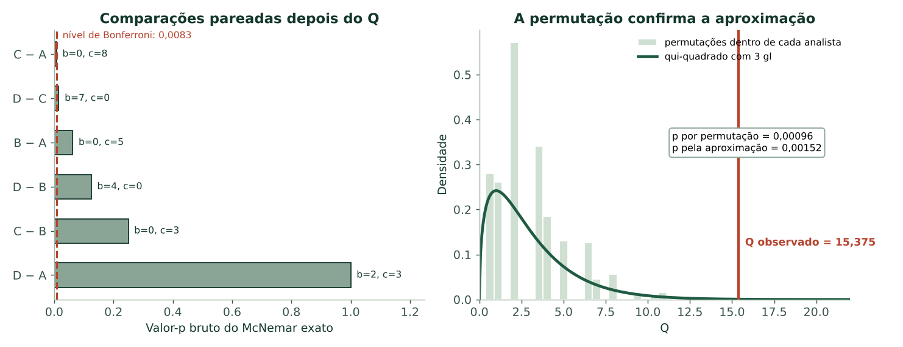

Teste Q de Cochran
Extensão do teste de McNemar para três ou mais medidas binárias feitas nas mesmas unidades, em delineamento de blocos.
Comece por aqui
O teste Q de Cochran é a extensão do teste de McNemar para três ou mais medidas binárias feitas nas mesmas unidades. É o análogo do teste de Friedman para resposta dicotômica, e responde a uma pergunta de delineamento em blocos: as taxas de sucesso dos tratamentos são iguais, depois de descontadas as diferenças entre as unidades?
Se um analista concluiu a tarefa nas quatro versões da interface, ou em nenhuma, ele nada diz sobre qual versão é melhor. No exemplo desta ficha, 8 dos 18 analistas estão nessa situação, e refazer a conta apenas com os 10 restantes devolve exatamente o mesmo Q. A informação está nos blocos de resposta mista.
O que é o teste
Os dados formam uma matriz de zeros e uns com \(n\) blocos nas linhas e \(k\) tratamentos nas colunas. A hipótese nula é que a probabilidade de sucesso é a mesma nos \(k\) tratamentos, permitindo que cada bloco tenha o seu próprio nível. A estatística compara as somas das colunas entre si, usando as somas das linhas para calibrar o quanto de variação é atribuível aos blocos.

Pressupostos e como verificá-los
| Pressuposto | Por que importa | Como verificar |
|---|---|---|
| Resposta binária | O teste é construído para zeros e uns. | Natureza da variável; para resposta ordinal ou contínua, Friedman. |
| Blocos completos | Cada bloco recebe todos os k tratamentos. | Tabela de contagens; dados faltantes exigem outro modelo. |
| Blocos independentes entre si | A dependência permitida é só dentro do bloco. | Delineamento. |
| Ordem de aplicação casualizada | Evita confundir tratamento com ordem. | Protocolo; se a ordem importa, inclua-a no modelo. |
| Número suficiente de blocos mistos | A aproximação qui-quadrado é assintótica. | Conte-os; com poucos, use permutação. |
| Ausência de interação bloco × tratamento | Q testa um efeito médio de tratamento. | Gráfico de perfis; se os perfis se cruzarem muito, interprete com cautela. |
Não há regra consagrada. Uma referência prática razoável é exigir que o número de blocos mistos seja ao menos cinco vezes o número de tratamentos, e que nenhuma coluna tenha 0% ou 100% de sucesso. No exemplo desta ficha há 10 blocos mistos para 4 tratamentos, o que é pouco — e por isso o valor-p por permutação (0,00096) e o da aproximação (0,00152) diferem por um fator de 1,6, ainda que ambos levem à mesma conclusão.
Hipóteses e estatística de teste
Em que:
- \(k\)
- número de tratamentos
- \(n\)
- número de blocos
- \(G_j\)
- total de sucessos no tratamento \(j\) (soma da coluna)
- \(L_i\)
- total de sucessos no bloco \(i\) (soma da linha)
- \(N=\sum_j G_j=\sum_i L_i\)
- número total de sucessos
Exemplo numérico, passo a passo
| Versão | Sucessos (Gⱼ) | Taxa |
|---|---|---|
| Versão A | 9 | 50,0% |
| Versão B | 14 | 77,8% |
| Versão C | 17 | 94,4% |
| Versão D | 10 | 55,6% |
| Total | N = 50 | — |
Os totais por analista são \(L_i\): 3, 4, 2, 4, 1, 4, 2, 4, 1, 4, 3, 4, 1, 3, 3, 4, 0, 3. Daí \(\sum L_i^2 = 168\) e \(\sum G_j^2 = 9^2+14^2+17^2+10^2 = 666\).
Com \(k-1=3\) graus de liberdade, \(p=1{,}523\times10^{-3}\): as quatro versões não têm a mesma taxa de conclusão.
Dos 18 analistas, 8 têm resposta uniforme (um teve 0 sucessos e sete tiveram 4). Refazendo toda a conta com os 10 restantes, Q = 15,375 — o mesmo número, até a quarta decimal.
Propriedades
- Com \(k=2\), \(Q\) é exatamente o McNemar sem correção de continuidade: no exemplo, \[\begin{aligned}Q &= (b-c)^2/(b+c) \\ &= (0-5)^2/5 = 5{,}000\end{aligned}\] para as versões A e B.
- Com resposta binária, a estatística de Friedman calculada sobre os postos dentro de cada bloco reduz-se algebricamente a Q. No exemplo os dois devolvem 15,3750 e o mesmo valor-p; não é coincidência, é identidade.
- Blocos uniformes não alteram a estatística: eles contribuem com o mesmo valor ao numerador e ao denominador.
- É invariante a permutações das linhas e distingue os tratamentos apenas pelos totais das colunas, dados os totais das linhas.
- É assintoticamente qui-quadrado; com poucos blocos mistos, a permutação dentro de bloco dá o valor-p exato.
- Pode ser obtido como teste de escore em uma regressão logística condicional com um estrato por bloco.
Como interpretar os resultados
| Elemento | O que informa | Cuidado |
|---|---|---|
| Cochran Q | A estatística, com k − 1 graus de liberdade. | Assintótica. |
| p-value | Evidência de que ao menos uma taxa difere. | Não diz qual. |
| Taxas por coluna | O tamanho das diferenças. | Reporte-as sempre. |
| Blocos mistos | Tamanho efetivo da amostra. | É ele que determina o poder. |
| Pós-teste | Quais pares diferem. | Exige ajuste para multiplicidade. |
| W de Kendall | Concordância entre os blocos. | Pergunta diferente da do teste. |
O teste global diz que as taxas não são todas iguais; não diz quais diferem. O procedimento usual é aplicar McNemar a cada par, com ajuste de Bonferroni ou Holm. No exemplo, dos seis pares apenas o par versão C − versão A sobrevive ao ajuste (p ajustado = 0,047), e versão D − versão C fica na fronteira (Holm = 0,078). O motivo é o número pequeno de discordâncias em cada par: o teste exato de McNemar com b + c = 8 não consegue produzir valor-p menor que 2⁻⁷ = 0,0078, de modo que a multiplicidade esgota rapidamente o orçamento de erro.
Como executar no R e em Python
Onde executar o código em Python
Não é preciso instalar nada: o Google Colab é um computador na nuvem, gratuito, que executa Python pelo navegador e já traz as bibliotecas usadas aqui (numpy, scipy e matplotlib).
A função é DescTools::CochranQTest(), que aceita a matriz de zeros e uns diretamente ou uma fórmula no formato longo. O pacote rcompanion oferece pairwiseMcnemar() para o pós-teste. O W de Kendall sai de DescTools::KendallW(). Como a identidade com Friedman é exata para dados binários, friedman.test() devolve o mesmo resultado e serve como verificação.
library(DescTools)
CochranQTest(dados) # dados: matriz n x k de 0 e 1
friedman.test(dados) # devolve o mesmo Q, por identidade
Exemplo de aplicação
Contexto dos dados
Os dados são fictícios e foram criados pelo autor: 18 analistas executaram a mesma tarefa em quatro versões de uma interface, registrando-se apenas se concluíram ou não dentro do tempo estipulado. Cada analista passou pelas quatro versões, em ordem casualizada — é um delineamento em blocos completos com resposta binária.
Código em R
# Teste Q de Cochran: exemplo completo ----
# Pacotes: DescTools (teste e comparações), rcompanion (alternativa)
# install.packages(c("DescTools", "rcompanion"))
# Dados fictícios: 18 analistas executaram a MESMA tarefa em quatro versões de
# uma interface, e registrou-se se concluíram (1) ou não (0) dentro do tempo.
dados <- matrix(c(
1,1,1,0, 1,1,1,1, 0,1,1,0, 1,1,1,1, 0,0,1,0, 1,1,1,1,
0,1,1,0, 1,1,1,1, 0,0,1,0, 1,1,1,1, 0,1,1,1, 1,1,1,1,
0,0,1,0, 1,1,1,0, 0,1,1,1, 1,1,1,1, 0,0,0,0, 0,1,1,1),
ncol = 4, byrow = TRUE,
dimnames = list(paste0("analista", 1:18),
c("versão A", "versão B", "versão C", "versão D")))
dados
colSums(dados) # sucessos por versão
colMeans(dados) # taxas
rowSums(dados) # sucessos por analista
table(rowSums(dados)) # quantos blocos são "mistos"
# O teste
library(DescTools)
CochranQTest(dados)
# A conta, à mão
k <- ncol(dados); Gj <- colSums(dados); Li <- rowSums(dados); N <- sum(dados)
Q <- (k - 1) * (k * sum(Gj^2) - N^2) / (k * N - sum(Li^2))
Q
pchisq(Q, df = k - 1, lower.tail = FALSE)
# Blocos uniformes não contribuem: refaça só com os mistos
mistos <- dados[rowSums(dados) > 0 & rowSums(dados) < k, ]
Gm <- colSums(mistos); Lm <- rowSums(mistos); Nm <- sum(mistos)
(k - 1) * (k * sum(Gm^2) - Nm^2) / (k * Nm - sum(Lm^2)) # idêntico
# Verificação: com duas colunas, Q é o McNemar sem correção
duas <- dados[, c("versão A", "versão B")]
CochranQTest(duas)
mcnemar.test(table(duas[,1], duas[,2]), correct = FALSE)
# Comparações pareadas pós-teste (McNemar exato + ajuste)
pares <- combn(colnames(dados), 2)
pv <- apply(pares, 2, function(p) {
b <- sum(dados[, p[1]] == 1 & dados[, p[2]] == 0)
c_ <- sum(dados[, p[1]] == 0 & dados[, p[2]] == 1)
binom.test(b, b + c_, p = 0.5)$p.value
})
data.frame(par = apply(pares, 2, paste, collapse = " - "),
bruto = round(pv, 5),
bonferroni = round(p.adjust(pv, "bonferroni"), 5),
holm = round(p.adjust(pv, "holm"), 5))
# Concordância entre os analistas (W de Kendall)
DescTools::KendallW(dados, correct = TRUE, test = TRUE)
# O mesmo teste pela via do Friedman: com resposta binária, coincide
friedman.test(dados)
# Formato longo, se precisar
longo <- data.frame(
analista = factor(rep(rownames(dados), times = 4)),
versao = factor(rep(colnames(dados), each = 18)),
sucesso = as.vector(dados))
library(rcompanion)
# pairwiseMcnemar(sucesso ~ versao | analista, data = longo, method = "holm")
# Gráficos
par(mfrow = c(1, 2))
barplot(colMeans(dados) * 100, col = "steelblue", ylim = c(0, 100),
ylab = "Taxa de conclusão (%)", main = "Por versão")
matplot(t(dados), type = "l", lty = 1, col = rgb(0, 0, 0, 0.3),
xaxt = "n", ylab = "Sucesso", main = "Perfis dos analistas")
axis(1, at = 1:4, labels = colnames(dados))
par(mfrow = c(1, 1))
A mesma análise em Python, com os resultados
Cole o código em um notebook do Google Colab ↗ e execute com Shift+Enter. Os valores abaixo são a saída desse código.
# Bibliotecas: numpy, scipy e matplotlib (já instaladas no Google Colab)
import numpy as np
from scipy import stats
import itertools
# Dados fictícios: 18 analistas executaram a MESMA tarefa em quatro versões de
# uma interface, e registrou-se se concluíram (1) ou não (0) dentro do tempo.
# Cada analista passou pelas quatro versões: é um delineamento em blocos com
# resposta binária.
dados = np.array([
[1,1,1,0],[1,1,1,1],[0,1,1,0],[1,1,1,1],[0,0,1,0],[1,1,1,1],
[0,1,1,0],[1,1,1,1],[0,0,1,0],[1,1,1,1],[0,1,1,1],[1,1,1,1],
[0,0,1,0],[1,1,1,0],[0,1,1,1],[1,1,1,1],[0,0,0,0],[0,1,1,1]])
versoes = ["versão A", "versão B", "versão C", "versão D"]
n, k = dados.shape
print(f"{n} analistas x {k} versões da interface")
print("versão sucessos taxa")
for j, v in enumerate(versoes):
print(f"{v:<12}{int(dados[:,j].sum()):8d} {100*dados[:,j].mean():5.1f}%")
Li = dados.sum(axis=1)
print(f"\nSucessos por analista: {Li}")
print(f"Analistas com 0 ou {k} sucessos (não contribuem): "
f"{int(np.sum((Li==0)|(Li==k)))} de {n}")
# 1. A estatística Q de Cochran
Gj = dados.sum(axis=0) # sucessos por tratamento
N = dados.sum()
Q = (k - 1) * (k * np.sum(Gj**2) - N**2) / (k * N - np.sum(Li**2))
p = stats.chi2.sf(Q, k - 1)
print(f"\nG_j (sucessos por versão) = {Gj} soma = {N}")
print(f"soma de G_j² = {int(np.sum(Gj**2))} | soma de L_i² = {int(np.sum(Li**2))}")
print(f"\nQ = {k-1} x ({k} x {int(np.sum(Gj**2))} - {int(N)}²) / ({k} x {int(N)} - {int(np.sum(Li**2))})")
print(f"Q = {Q:.4f} | gl = {k-1} | p-valor = {p:.3e}")
# 2. Só os blocos com resposta mista contribuem
mistos = dados[(Li > 0) & (Li < k)]
Gm = mistos.sum(axis=0); Lm = mistos.sum(axis=1); Nm = mistos.sum(); nm = len(mistos)
Qm = (k-1)*(k*np.sum(Gm**2) - Nm**2)/(k*Nm - np.sum(Lm**2))
print(f"\nRefazendo a conta apenas com os {nm} analistas de resposta mista:")
print(f"Q = {Qm:.4f}, idêntico. Blocos todos-sucesso ou todos-falha não informam.")
# 3. Com k = 2, Q é o McNemar sem correção
print("\nVerificação: com apenas duas versões (A e B), Q deve ser o McNemar sem correção.")
d2 = dados[:, :2]
L2 = d2.sum(axis=1); G2 = d2.sum(axis=0); N2 = d2.sum()
Q2 = 1 * (2*np.sum(G2**2) - N2**2)/(2*N2 - np.sum(L2**2))
b = int(np.sum((d2[:,0]==1) & (d2[:,1]==0))); c = int(np.sum((d2[:,0]==0) & (d2[:,1]==1)))
print(f" Q = {Q2:.4f} | McNemar sem correção = (b-c)²/(b+c) = ({b}-{c})²/{b+c} "
f"= {(b-c)**2/(b+c):.4f}")
# 4. Comparações múltiplas: McNemar par a par com ajuste
print(f"\nComparações pareadas (McNemar exato, ajuste de Bonferroni para {k*(k-1)//2} testes)")
pares = list(itertools.combinations(range(k), 2))
brutos = []
for i, j in pares:
bi = int(np.sum((dados[:,i]==1) & (dados[:,j]==0)))
ci = int(np.sum((dados[:,i]==0) & (dados[:,j]==1)))
pv = 1.0 if bi+ci == 0 else min(1.0, 2*stats.binom.cdf(min(bi,ci), bi+ci, 0.5))
brutos.append((f"{versoes[j]} - {versoes[i]}", bi, ci, pv))
m = len(pares)
ordem = sorted(range(m), key=lambda t: brutos[t][3])
holm = np.empty(m); ac = 0.0
for pos, idx in enumerate(ordem):
ac = max(ac, (m - pos)*brutos[idx][3]); holm[idx] = min(1.0, ac)
print(f"{'par':<26}{'b':>4}{'c':>4}{'p bruto':>11}{'Bonferroni':>12}{'Holm':>10}")
for idx in ordem:
nm_, bi, ci, pv = brutos[idx]
print(f"{nm_:<26}{bi:4d}{ci:4d}{pv:11.5f}{min(1,m*pv):12.5f}"
f"{'*' if min(1,m*pv)<0.05 else ' '}{holm[idx]:9.5f}{'*' if holm[idx]<0.05 else ' '}")
# 5. Tamanho de efeito
print(f"\nW de Kendall (concordância entre analistas) = {Q/(n*(k-1)):.4f}")
print(f"Amplitude das taxas de sucesso = {100*(Gj.max()-Gj.min())/n:.1f} pontos percentuais")
# 6. Versão exata por permutação, para amostras pequenas
print("\nValor-p exato por permutação (os rótulos das versões são embaralhados")
print("DENTRO de cada analista, que é o que a hipótese nula autoriza):")
rng = np.random.default_rng(2026)
B = 100000
cont = 0
for _ in range(B):
perm = np.array([linha[rng.permutation(k)] for linha in dados])
Gp = perm.sum(axis=0); Lp = perm.sum(axis=1); Np = perm.sum()
den = k*Np - np.sum(Lp**2)
if den == 0: continue
Qp = (k-1)*(k*np.sum(Gp**2) - Np**2)/den
if Qp >= Q - 1e-9: cont += 1
print(f" p por permutação ({B} reamostragens) = {(1+cont)/(B+1):.6f}")
print(f" p pela aproximação qui-quadrado = {p:.6f}")
# 7. O Q de Cochran é o teste de Friedman aplicado a dados binários
Qf, pf = stats.friedmanchisquare(*[dados[:, j] for j in range(k)])
print(f"\nTeste de Friedman sobre os mesmos dados: Q = {Qf:.4f}, p = {pf:.3e}")
print("Os dois coincidem EXATAMENTE, e isso não é coincidência: com resposta")
print("binária, a estatística de Friedman calculada sobre os postos dentro de cada")
print("bloco reduz-se algebricamente ao Q de Cochran. O Q é a forma direta de")
print("escrever o mesmo teste, dispensando o cálculo dos postos.")
Resultados da execução
18 analistas x 4 versões da interface versão sucessos taxa versão A 9 50.0% versão B 14 77.8% versão C 17 94.4% versão D 10 55.6% Sucessos por analista: [3 4 2 4 1 4 2 4 1 4 3 4 1 3 3 4 0 3] Analistas com 0 ou 4 sucessos (não contribuem): 8 de 18 G_j (sucessos por versão) = [ 9 14 17 10] soma = 50 soma de G_j² = 666 | soma de L_i² = 168 Q = 3 x (4 x 666 - 50²) / (4 x 50 - 168) Q = 15.3750 | gl = 3 | p-valor = 1.523e-03 Refazendo a conta apenas com os 10 analistas de resposta mista: Q = 15.3750, idêntico. Blocos todos-sucesso ou todos-falha não informam. Verificação: com apenas duas versões (A e B), Q deve ser o McNemar sem correção. Q = 5.0000 | McNemar sem correção = (b-c)²/(b+c) = (0-5)²/5 = 5.0000 Comparações pareadas (McNemar exato, ajuste de Bonferroni para 6 testes) par b c p bruto Bonferroni Holm versão C - versão A 0 8 0.00781 0.04688* 0.04688* versão D - versão C 7 0 0.01562 0.09375 0.07812 versão B - versão A 0 5 0.06250 0.37500 0.25000 versão D - versão B 4 0 0.12500 0.75000 0.37500 versão C - versão B 0 3 0.25000 1.00000 0.50000 versão D - versão A 2 3 1.00000 1.00000 1.00000 W de Kendall (concordância entre analistas) = 0.2847 Amplitude das taxas de sucesso = 44.4 pontos percentuais Valor-p exato por permutação (os rótulos das versões são embaralhados DENTRO de cada analista, que é o que a hipótese nula autoriza): p por permutação (100000 reamostragens) = 0.000960 p pela aproximação qui-quadrado = 0.001523 Teste de Friedman sobre os mesmos dados: Q = 15.3750, p = 1.523e-03 Os dois coincidem EXATAMENTE, e isso não é coincidência: com resposta binária, a estatística de Friedman calculada sobre os postos dentro de cada bloco reduz-se algebricamente ao Q de Cochran. O Q é a forma direta de escrever o mesmo teste, dispensando o cálculo dos postos.

| Elemento | Valor | Leitura |
|---|---|---|
| Taxas observadas | A 50,0% · B 77,8% · C 94,4% · D 55,6% | Amplitude de 44,4 pontos. |
| Σ Gⱼ² / Σ Lᵢ² | 666 / 168 | — |
| Q de Cochran | 15,3750; gl = 3; p = 1,523 × 10⁻³ | As taxas não são todas iguais. |
| Blocos mistos | 10 de 18 | O tamanho efetivo da amostra. |
| Q só com os mistos | 15,3750 | Idêntico, como previsto. |
| Valor-p por permutação | 0,000960 (100 000 reamostragens) | Mais fiel que a aproximação aqui. |
| Friedman sobre os mesmos dados | Q = 15,3750; p = 1,523 × 10⁻³ | Coincide por identidade algébrica. |
| Verificação com k = 2 (A e B) | Q = 5,000 = McNemar sem correção | — |
| W de Kendall | 0,2847 | Concordância fraca entre os analistas. |
| Par | b | c | p bruto | Bonferroni | Holm |
|---|---|---|---|---|---|
| C − A | 0 | 8 | 0,00781 | 0,04688 | 0,04688 |
| D − C | 7 | 0 | 0,01562 | 0,09375 | 0,07812 |
| B − A | 0 | 5 | 0,06250 | 0,37500 | 0,25000 |
| D − B | 4 | 0 | 0,12500 | 0,75000 | 0,37500 |
| C − B | 0 | 3 | 0,25000 | 1,00000 | 0,50000 |
| D − A | 2 | 3 | 1,00000 | 1,00000 | 1,00000 |
Leitura: as quatro versões da interface não produzem a mesma taxa de conclusão (Q = 15,375; gl = 3; p = 0,0015). A versão C é claramente a melhor: 17 dos 18 analistas concluíram a tarefa nela, contra 9 na versão A. No pós-teste, apenas o contraste entre C e A sobrevive ao ajuste para seis comparações, e o contraste entre C e D fica à beira do corte.
Dois pontos técnicos merecem registro. Primeiro, a permutação dentro de bloco devolve p = 0,00096, cerca de 1,6 vez menor que a aproximação qui-quadrado: com apenas 10 blocos mistos, a aproximação é conservadora, e vale reportar o valor por permutação. Segundo, o teste de Friedman aplicado aos mesmos dados devolve o mesmo Q até a quarta decimal. Isso é uma identidade algébrica para resposta binária, não um acaso numérico: os postos dentro de um bloco com apenas dois valores possíveis são uma função dos próprios zeros e uns, e a álgebra de Friedman colapsa na de Cochran.
O W de Kendall de 0,285 diz algo diferente e complementar: os analistas não ordenam as versões de maneira muito parecida. Há um efeito médio claro de tratamento e, ao mesmo tempo, bastante variação individual — o que se vê nos perfis cruzados do gráfico central.
Erros comuns
| Erro | Como evitar |
|---|---|
| Aplicar a grupos independentes | Para grupos independentes, use o qui-quadrado de independência. |
| Descartar os blocos uniformes dos dados | Não é preciso: eles não alteram a estatística. Mas conte-os para avaliar o poder. |
| Reportar n em vez do número de blocos mistos | O poder depende destes últimos. |
| Parar no teste global | Um Q significativo não diz qual par difere. |
| Fazer o pós-teste sem ajuste | Com k = 4 são seis comparações. |
| Usar a aproximação com poucos blocos mistos | Prefira permutação dentro de bloco. |
| Interpretar Q como medida de concordância | Para concordância, use o W de Kendall ou o kappa. |
| Usar com resposta ordinal ou contínua | Nesse caso, Friedman ou ANOVA de medidas repetidas. |
| Ignorar blocos incompletos | Com dados faltantes, use modelo misto ou GEE. |
Alternativas e fluxo de trabalho
| Procedimento | Quando preferir |
|---|---|
| Teste de McNemar | Apenas duas medidas: é o caso k = 2 do Q. |
| Permutação dentro de bloco | Poucos blocos mistos; dá o valor-p exato. |
| Teste de Friedman | Resposta ordinal ou contínua em blocos; com resposta binária, é o próprio Q. |
| ANOVA de medidas repetidas | Resposta aproximadamente normal em medidas repetidas. |
| Modelo linear generalizado misto | Blocos incompletos, covariáveis, ou mais de um fator. |
| GEE | Interesse na média populacional, com estrutura de correlação de trabalho. |
| Regressão logística condicional | Um estrato por bloco; permite covariáveis. |
| W de Kendall ou kappa de Fleiss | Quando a pergunta é sobre concordância entre as unidades. |
- Confirme blocos completos e resposta binária.
- Monte a matriz n × k de zeros e uns.
- Conte os blocos mistos: eles são o tamanho efetivo da amostra.
- Calcule Q e o valor-p; com poucos blocos mistos, acrescente a permutação.
- Se Q for significativo, aplique McNemar par a par com ajuste de Holm.
- Reporte as taxas por tratamento, Q, graus de liberdade, valor-p e o pós-teste.
- Se a concordância entre blocos interessar, calcule o W de Kendall.
Referências desta ficha
- COCHRAN, William G. The comparison of percentages in matched samples. Biometrika, v. 37, n. 3-4, p. 256-266, 1950.
- TATE, Merle W.; BROWN, Sara M. Note on the Cochran Q test. Journal of the American Statistical Association, v. 65, n. 329, p. 155-160, 1970.
- PATIL, Kashinath D. Cochran’s Q test: exact distribution. Journal of the American Statistical Association, v. 70, n. 349, p. 186-189, 1975.
- KENDALL, Maurice G.; BABINGTON SMITH, B. The problem of m rankings. The Annals of Mathematical Statistics, v. 10, n. 3, p. 275-287, 1939.
- SHESKIN, David J. Handbook of parametric and nonparametric statistical procedures. 5. ed. Boca Raton: CRC Press, 2011.
- HOLLANDER, Myles; WOLFE, Douglas A.; CHICKEN, Eric. Nonparametric statistical methods. 3. ed. Hoboken: Wiley, 2014.
- AGRESTI, Alan. Categorical data analysis. 3. ed. Hoboken: Wiley, 2013.
- FLEISS, Joseph L.; LEVIN, Bruce; PAIK, Myunghee Cho. Statistical methods for rates and proportions. 3. ed. Hoboken: Wiley, 2003.
- R CORE TEAM. R: a language and environment for statistical computing. Vienna: R Foundation for Statistical Computing, 2026. Disponível em: https://www.r-project.org/. (Função
friedman.test, pacotestats.) - SIGNORELL, Andri et al. DescTools: tools for descriptive statistics. R package. Disponível em: https://CRAN.R-project.org/package=DescTools. (Funções
CochranQTesteKendallW.) - MANGIAFICO, Salvatore S. rcompanion: functions to support extension education program evaluation. R package. Disponível em: https://CRAN.R-project.org/package=rcompanion.
- POSIT TEAM. RStudio: integrated development environment for R. Boston: Posit Software, PBC. Disponível em: https://posit.co/download/rstudio-desktop/.
- VIRTANEN, Pauli et al. SciPy 1.0: fundamental algorithms for scientific computing in Python. Nature Methods, v. 17, p. 261-272, 2020. DOI: 10.1038/s41592-019-0686-2. (Funções do módulo
scipy.stats.) - HARRIS, Charles R. et al. Array programming with NumPy. Nature, v. 585, p. 357-362, 2020. DOI: 10.1038/s41586-020-2649-2.
- HUNTER, John D. Matplotlib: a 2D graphics environment. Computing in Science & Engineering, v. 9, n. 3, p. 90-95, 2007.
- GOOGLE. Google Colaboratory. Disponível em: https://colab.research.google.com/.
- As figuras desta ficha foram elaboradas pelo autor.

Prof. Dr. Cássius Henrique Xavier Oliveira
Professor · ICTIN/UFLA · Estatística, Confiabilidade e Ciência de Dados.
Conheça minha trajetória e projetos →